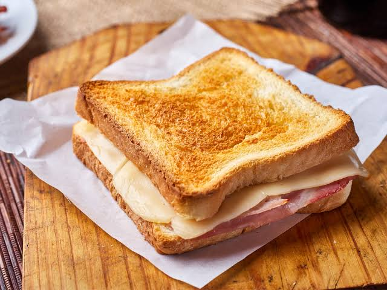

Misto Quente
Pão, queijo e presunto na frigideira. Crocante por fora, derretido por dentro, em 4 minutos.
Tempo de preparo
4 minutos
Louça suja
1 frigideira
Porções
1 porção
Dificuldade
Fácil
Imagem da receita

Vídeo do preparo
Ingredientes
- 2 fatias de pão de forma
- 2 fatias de queijo (mussarela ou prato)
- 2 fatias de presunto
- 1 colher de chá de manteiga
Modo de preparo
- Passe a manteiga nas duas fatias de pão, no lado de fora.
- Monte o sanduíche com o queijo, o presunto e o queijo novamente.
- Aqueça a frigideira em fogo baixo.
- Coloque o sanduíche e deixe por 2 minutos, até dourar.
- Vire com uma espátula e deixe mais 2 minutos do outro lado.
- Corte ao meio e sirva quente.
Dica: fogo baixo é obrigatório. No fogo alto o pão queima antes do queijo derreter.